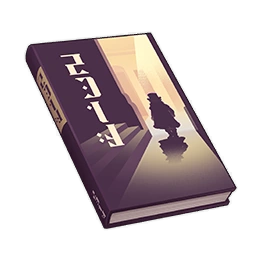

Snezhnaya · Books & Literature
Belyi and Chernyi
A one-volume Snezhnayan satire credited to the mysterious writer Hvergelmir, Belyi and Chernyi follows Sir Stevenson after a potion divides his behavior, leaving his old enemy with a rapier and a request for a mercy killing in an unfinished excerpt.

Book record and attribution
Belyi and Chernyi is a one-volume Snezhnayan novel introduced in Version 7.2. Its in-game description calls it a classic satire by the mysterious writer Hvergelmir. The volume is sold by Kranov beside Maryushka’s Treasures in Novokitezhgrad.
The description supplies the premise, while the surviving text supplies a partial story. Keeping those two layers distinct matters: the blurb promises a struggle between two spirits, but the excerpt ends before it resolves that conflict.
The frame around Sir Stevenson
The excerpt begins with a narrator speaking to a younger friend about Sir Stevenson, a figure they had both not seen for some time. Stevenson was a miser and openly hostile toward humans; now he has become unusually generous and smiles while handing out relief. The narrator replies that people can change, while the friend finds the transformation too abrupt to explain.
The narrator then recalls a private dinner with Stevenson. The two are described as near-enemies, which makes Stevenson’s excessive hospitality and his invitation into a private weapon gallery feel strange rather than reassuring.
The potion and the divided self
In the weapon gallery, Stevenson convulses and seems to produce a second shadow. The version of him the narrator recognizes returns long enough to condemn the other self for flattering people he calls low-born and smiling at humans. The narrator privately thinks that this kinder behavior is a good thing.
The book’s description says Stevenson drank a mysterious potion to treat a mental illness and that two spirits then struggled over his body. The excerpt links the potion to his suffering but does not explain the spirits’ nature, whether the two behaviors are separate identities or something supernatural, or what the potion was meant to do beyond the blurb’s brief account.
The rapier and the unfinished ending
Stevenson begs his old enemy to kill him if he ceases to exist as himself. The narrator does not promise to do so. Later, the narrator’s butler delivers a rapier from Stevenson’s collection, a weapon once held by Grand Duke Vila Strivozha. The narrator reads it as a sign of Stevenson’s decision and says their promised day has arrived.
The excerpt stops with the narrator setting out to find someone who can wield the rapier. It does not narrate the meeting, establish whether Stevenson died, or identify the intended sword-bearer. Any account that supplies those events goes beyond the text available in this volume.
Satire, class, and sympathy
The description explicitly labels the novel satire. In the excerpt, that framing is visible in the clash between Stevenson’s status-conscious contempt and the other self’s generosity toward ordinary people. The narrator does not pretend to be neutral: they welcome the charitable behavior and have a personal history of enmity with Stevenson.
The story therefore gives readers a social conflict as well as a supernatural mystery. It does not settle whether the potion reveals a truer self, replaces the old one, or merely makes the divided struggle visible. The ellipses and unfinished final sentence preserve those questions rather than answering them.
The play on the title in Odette’s quest
The Version 7.0 World Quest Variations on Belyi and Chernyi shares the novel’s title and centers on Odette’s two-week preparation for the ballet Black Snow Swan. Vodyanitsa describes the ballet as an adaptation of a literary classic and emphasizes the role’s emotional demands. Odette reads its black swan as someone who stops trying to fit into the flock, accepts solitude, and refuses to submit to fate; this is her interpretation of the role, shaped by her own life.
The quest dialogue does not explicitly name this volume as the classic behind the ballet, nor does it equate Sir Stevenson or the novel’s narrator with Odette’s characters. The shared title makes the works worth reading beside one another, while the exact adaptation link remains unstated in the dialogue.
Hvergelmir in Version 7.2 lore
A separate Version 7.2 World Quest uses Hvergelmir as the name of an organization. Its account identifies Grand Duke Alvis and Aksinya as members; it also says Alvis followed Hvergelmir’s methods when he created the being known as the Shimmering One. This gives the name a second, significant use in Snezhnayan lore.
The book calls Hvergelmir a mysterious writer, but neither the book description nor the cited quest identifies that writer as Alvis, Aksinya, another organization member, or the organization itself. A proposed identity or connection should be labeled as theory unless another in-game source confirms it.
What the book establishes
The archive presents a one-volume satirical novel credited to the mysterious writer Hvergelmir. Its description gives a nobleman, a potion, and two spirits struggling for control of his body; the excerpt tells how Sir Stevenson’s sharply divided behavior emerges during a meeting with his longtime enemy and ends with a rapier being passed to the narrator.
The text leaves its central conflict unresolved. It does not reveal the potion’s origin, establish the author’s identity, explain the exact relationship between the novel and Odette’s ballet, or prove that the writer named Hvergelmir belongs to the Hvergelmir organization.
This is an original CoreGG reading guide, not an official HoYoverse article or a reproduction of the game text. Source links below identify the records used so you can check the original context.
Sources & references
Check these sources for the original game text and reference trail.